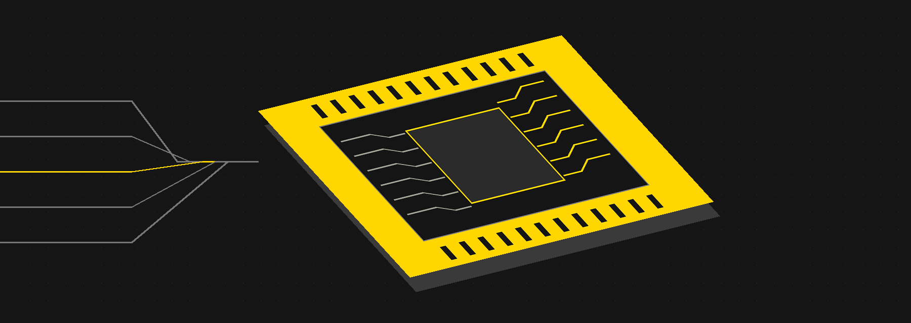

Prepare a Pi Zero 2 W for USHER¶

This guide covers the Raspberry Pi Zero 2 W reference board and its current 64-bit Raspberry Pi OS Trixie setup. MORA means the onboard compute role, so a different suitable board may be used; its OS, UART, drivers, runtime packages and deployment need board-specific setup. These Pi instructions are not universal.
When this guide says OS image, it means the single operating-system file you flash onto a microSD card—not a camera JPEG—and flashing simply means writing that operating system onto the card so MORA can boot from it.
Use the official Raspberry Pi Imager to write Raspberry Pi OS to a microSD card. The steps below cover first access, the camera UART and network settings you may need away from the desk.
Before flashing, make sure the selected Wi-Fi network is reachable by a Raspberry Pi Zero 2 W. It supports 2.4 GHz Wi-Fi; use WPA2-Personal or a WPA3-Personal network verified to work with the selected image and access point. Avoid enterprise authentication and legacy TKIP.
- In Imager, select Raspberry Pi Zero 2 W, the 64-bit Raspberry Pi OS Trixie headless image, and the intended microSD card. Confirm its capacity and name before continuing: writing erases the selected card.
- Open OS customization. Set a hostname, a non-default user, the Wi-Fi network and country, then enable SSH. Prefer public-key authentication; paste the public key from the development PC into Authorized keys.
- Write the card and wait for Imager's verification to succeed. Eject it, insert it into MORA, and power the board.
- From the development PC, confirm the configured account and network work:
This example uses the project's default account and hostname. Substitute the
username and hostname you configured in Imager if they differ. The .local
name requires mDNS support on the development PC and local network; if it
does not resolve, use the board's DHCP address from the router instead.
For Imager-specific screens and recovery options, see the official Raspberry Pi getting-started documentation.
Fast SD-Card Backup, Cloning, And Auto-Expanding Restore¶
Configuring Raspberry Pi OS, Wi-Fi, SSH keys, UART overlays, device groups, and
camera tools from scratch takes real effort—and microSD cards at an airfield
occasionally get lost, soaked, or corrupted right before flight day. Sensoraia
ships two Linux PC helpers in build-support/ that turn your finished "golden"
MORA card into a small archive you can clone onto spare cards in minutes:
- Why this saves so much time: A plain whole-card
ddreads every single empty gigabyte on a 32 GB, 64 GB, or 128 GB card. Instead,build-support/fast_sd_backup.shinspects the partition table (sfdisk), reads only up to the last sector actually used by your partitions, shows a live progress bar and ETA (pv), and compresses across all CPU cores in parallel (xz -1 -T0). When restoring or cloning onto a new card,build-support/fast_sd_restore_and_expand.shstreams the image straight to hardware and automatically expands the EXT4 root partition to 100% of the destination card (parted+e2fsck+resize2fs) before you even eject it—no extra resize dance on MORA needed!
Install the standard Linux disk utilities once on your PC if needed
(sudo apt install pv xz-utils parted e2fsprogs util-linux), shut MORA down
cleanly, and insert its microSD card into your PC.
- Back up your configured MORA card (confirm the whole-disk device name
such as
/dev/sdXor/dev/mmcblk0withlsblk—never a partition like/dev/sdX1):
lsblk -o NAME,SIZE,MODEL,TRAN,MOUNTPOINTS
sudo bash build-support/fast_sd_backup.sh /dev/sdX /path/to/mora-golden.img.xz
- Clone or restore onto another microSD card (at least as large as the
used partition boundary; this erases the entire target card, so double-
check
lsblkso your laptop's own SSD stays safe and happy):
lsblk -o NAME,SIZE,MODEL,TRAN,MOUNTPOINTS
sudo bash build-support/fast_sd_restore_and_expand.sh \
/path/to/mora-golden.img.xz /dev/sdY
Wait until the script prints ==> Restore and expansion complete! before
removing the card. Keep two cloned cards in your flight box and future-you will
thank present-you. (For flashing a brand-new blank OS for the very first time,
Raspberry Pi Imager remains the easiest starting point.)
Configure UART for USHER¶
On MORA, disable Bluetooth and dedicate the full UART to USHER. Run the following on MORA, then reboot:
Under the existing [all] section in config.txt, add:
Save the file, then open raspi-config to turn off the Linux login prompt on
that serial port (an autopilot and a Linux login prompt make terrible
conversation partners):
In raspi-config, select Interface Options > Serial Port, answer No to
the login shell, and Yes to serial hardware, then reboot:
After reboot, log back in and verify the UART device mapping and group membership:
Expected mapping: /dev/serial0 -> ttyAMA0. The account running USHER must
belong to dialout; if dialout is not listed yet, add it once:
Log out and back in so the new group membership takes effect.
Preventing Sleep and Suspend States¶
Raspberry Pi OS normally does not suspend a headless Pi. If a board is managed by software that might request suspend, disable those targets explicitly:
If you do not like the change for whatever reason, to reverse the change later, run:
Save Multiple Wi-Fi Networks¶
Raspberry Pi OS Trixie uses NetworkManager. You can save more than one Wi-Fi profile so MORA can connect to a known network when it is available. Configure each profile for a network you expect MORA to use in the field.
Check the Wi-Fi interface name on MORA:
It is usually wlan0. Add each network, replacing the example SSIDs and profile
names. --ask prompts for a password instead of putting it in shell history or
the process argument list:
sudo nmcli --ask device wifi connect "Desk SSID" ifname wlan0 name "Desk WiFi"
sudo nmcli --ask device wifi connect "Field SSID" ifname wlan0 name "Field WiFi"
NetworkManager saves each profile. To prefer one when it chooses among available autoconnect profiles, assign it a higher priority (the valid range is -999 to 999):
sudo nmcli connection modify "Desk WiFi" connection.autoconnect-priority 20
sudo nmcli connection modify "Field WiFi" connection.autoconnect-priority 10
A higher priority is considered first when NetworkManager selects a profile to autoconnect; it does not disconnect an already active network just to switch to a higher-priority one. Check saved and active profiles with:
For a network that does not broadcast its SSID, add hidden yes to the connect
command and provide the SSID explicitly. Hiding an SSID is not a security
measure and can cause clients to probe for that network:
Add Wi-Fi Before First Boot¶
Use this recovery path when MORA has no network connection and you cannot reach
it over SSH. It requires a Linux development PC with an nmcli version that
supports --offline, plus a way to read the microSD card. The saved profile
contains the Wi-Fi password, so keep the card secure.
- Shut MORA down, remove the microSD card, and attach it to the Linux PC. Mount
the card's Linux root filesystem partition (typically the larger ext4
partition), not its small FAT boot partition. Set
ROOTbelow to that partition's actual mount point; mount locations vary by PC and desktop. -
Generate a WPA2-Personal profile and install it with the permissions NetworkManager requires. Replace the example network name in both places. This command deliberately does not put the password on the command line:
ROOT=/path/to/mounted/rootfs nmcli --offline connection add \ type wifi ifname '*' con-name 'Field WiFi' ssid 'Field WiFi' \ wifi-sec.key-mgmt wpa-psk connection.autoconnect yes \ ipv4.method auto ipv6.method auto | sudo install -D -o root -g root -m 600 /dev/stdin \ "$ROOT/etc/NetworkManager/system-connections/Field-WiFi.nmconnection" -
Edit the generated profile as root:
In its existing
[wifi-security]section, addpsk=YOUR_WIFI_PASSWORDon a new line. Save the file. Use the actual password, not the placeholder. A WPA2 passphrase is normally 8 to 63 characters; a 64-character hexadecimal key is also accepted. 1. Safely unmount/eject the card from the PC, return it to MORA, and power on the board. Allow time for it to join the access point and obtain an address. Connect using the hostname configured in Imager. If mDNS does not resolve that name, find MORA in the router's DHCP client list and connect using its IP address.
After regaining access, use the previous section to add other Wi-Fi networks.